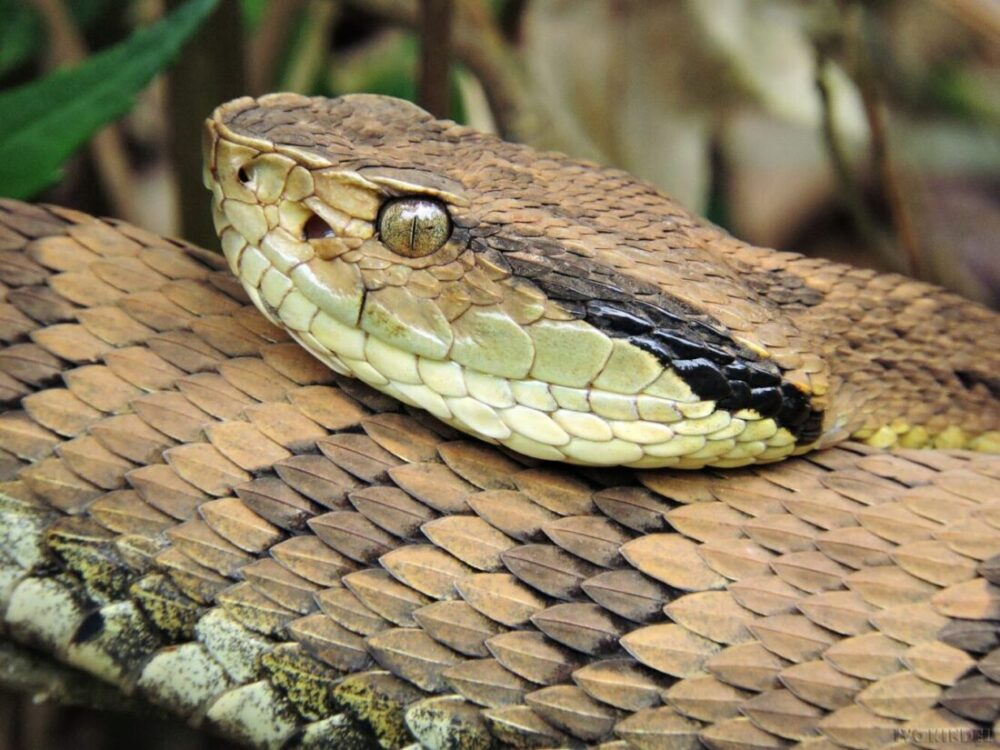
Jararacas
Possuem fosseta loreal (receptor
térmico entre o olho e a narina),
cauda lisa e manchas corporais
em formato de "V" invertido
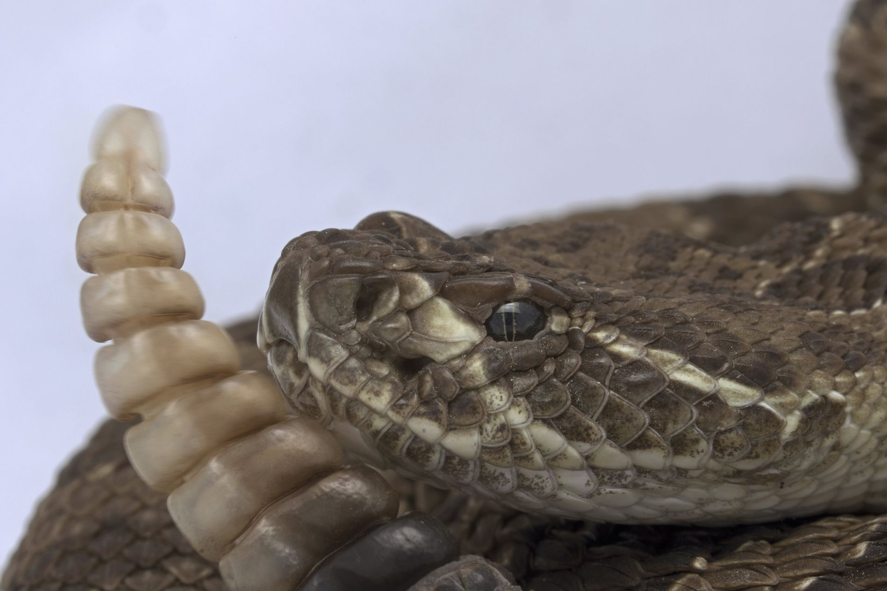
Cascavéis
Possuem fosseta loreal e a ponta
da cauda terminada em chocalho
(guizo)
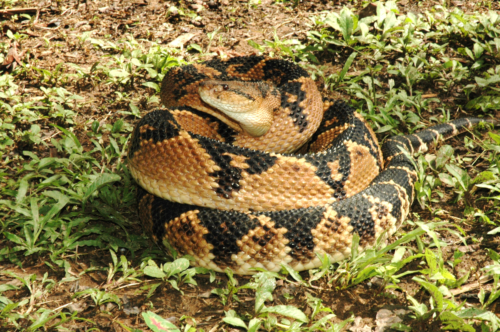
Surucucus-pico-de-jaca>
Possuem fosseta loreal,
escamas dorsais pontiagudas
que lembram a casca de uma
jaca e final da cauda
com escamas eriçadas.
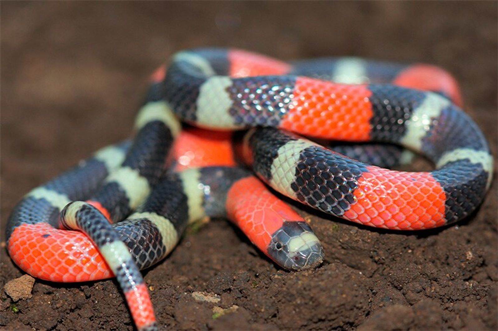
Cobras-corais verdadeiras>
Sem fosseta loreal; possuem
anéis coloridos (geralmente
vermelho, preto e branco/
amarelo) e olhos pequenos.
Colubrídeos
Possuem dentição áglifa (sem
dentes modificados) ou
opistóglifa (dentes inoculadores
no fundo da boca),
associados à glândula de
Duvernoy, que secretam veneno
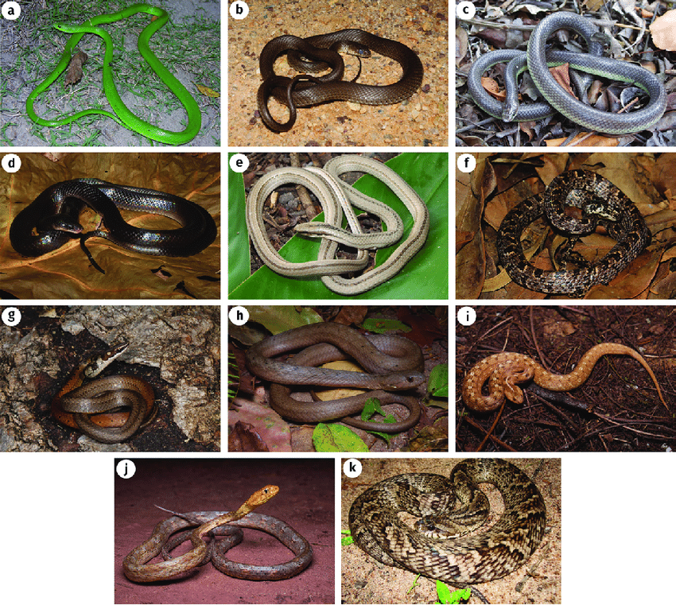
Dipsadídeos>
Possuem dentição áglifa (sem
dentes inoculadores) ou
opistóglifa (dentes no
fundo da boca),associada à
glândula de Duvernoy,
que secreta veneno.
Aracnídeos
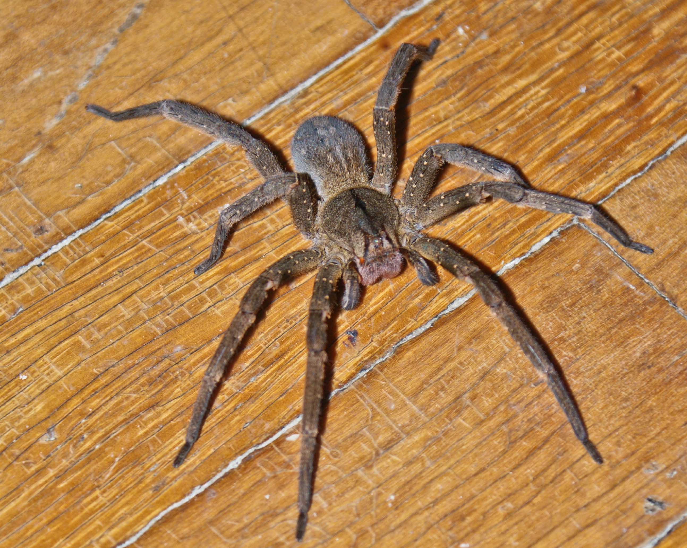
Aranhas-armadeiras
Grandes e agressivas, erguem
as pernas dianteiras em
posição de defesa ("armam-se")
e podem saltar
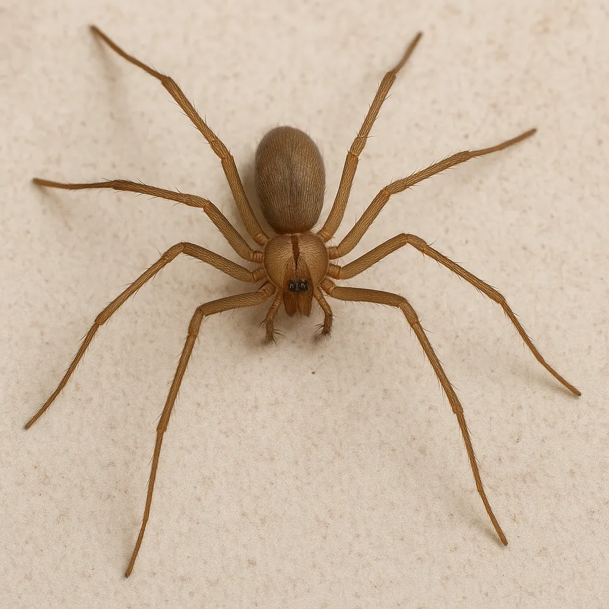
Aranha Marrom
pequenas e não agressivas,
possuem 6 olhos e uma
mancha no cefalotórax
semelhante a um violino;
picam apenas quando
comprimidas contra o corpo
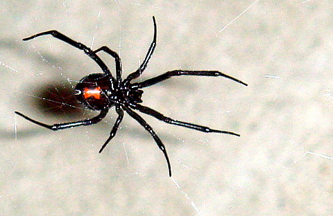
Viúvas-negras>
Pequenas e de hábitos
noturnos, possuem abdome
globoso com manchas
avermelhadas e não costumam
ser agressivas.
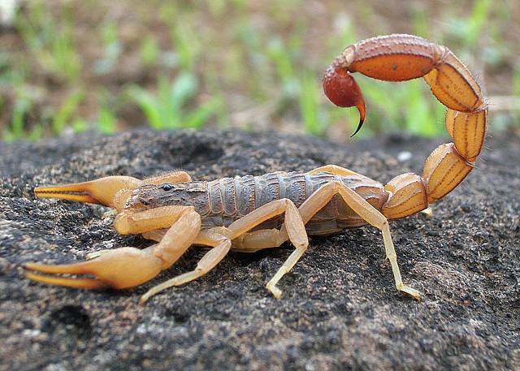
Escorpiões >
Possuem pedipalpos em
forma de pinça, cauda
articulada com ferrão na ponta
e um espinho característico
sob o ferrão..
insetos

Abelhas
Possuem o corpo piloso
e um ferrão serrilhado no abdome;
a Apis perde o ferrão junto
com estruturas vitais
e morre após ferroar.
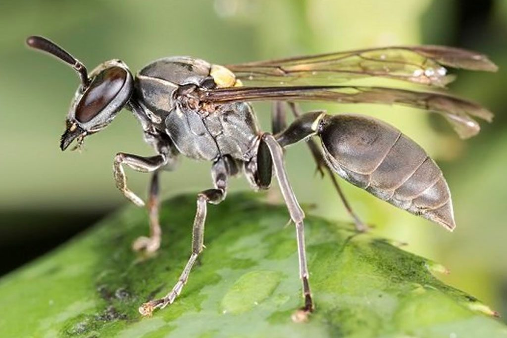
Vespas e Marimbondos
Possuem ferrão liso no
abdome que não se desprende,
permitindo que ferroem a
mesma vítima várias vezes.
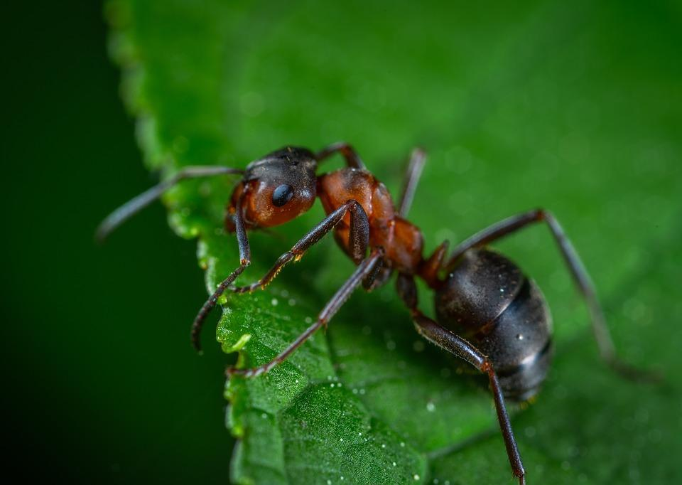
Formigas peçonhentas>
Fixam-se na pele pelas
mandíbulas e inocularm o
veneno com o ferrão abdominal

Lagartas Taturanas
Fases larvais de
mariposas cobertas por
cerdas ou espinhos
pontiagudos com glândulas de
veneno;
o gênero Lonomia pode
causar envenenamento
hemorrágico grave.
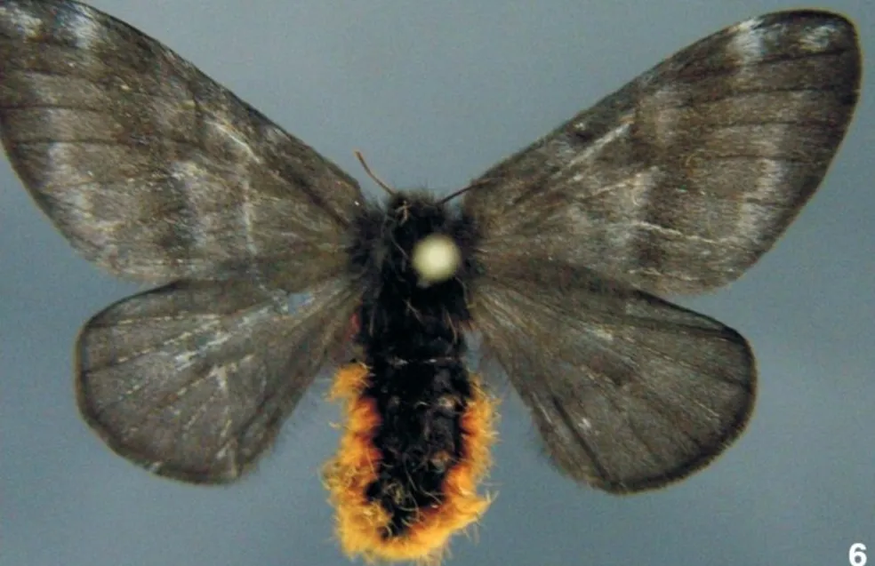
Mariposas Hylesia
Mariposas adultas que
possuem cerdas abdominais
irritantes que se desprendem
facilmente ao voar, causando
dermatites

Besouros vesicantes >
Não possuem ferrão inoculador;
possuem toxinas na hemolinfa
(pederina ou cantaridina) liberadas
ao serem esmagados ou
tocados, causando queimaduras
e bolhas na pele
.
Quilópodes
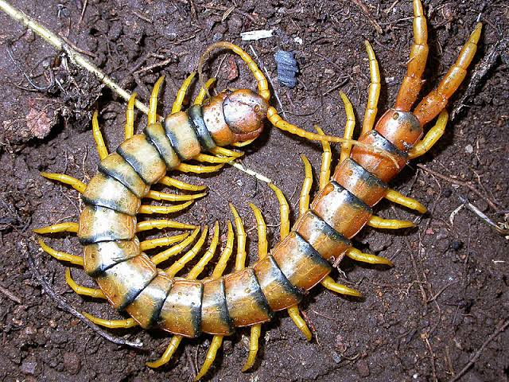
Escolopendras
São as maiores lacraias
(podem ultrapassar 30 cm),
possuindo de 21 a 23 segmentos.
São ágeis, agressivas e as únicas
com potencial de causar acidentes
humanos relevantes
, inoculando
veneno através das forcípulas
com ação miotóxica e neurotóxica
(provocando dor intensa,
inchaço e vermelhidão).
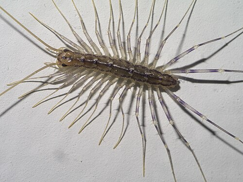
Escutígeras
Possuem 15 segmentos com
pernas e antenas muito longas
e finas;
deslocam-se rapidamente em
terrenos rochosos, mas
são inofensivas para os humanos
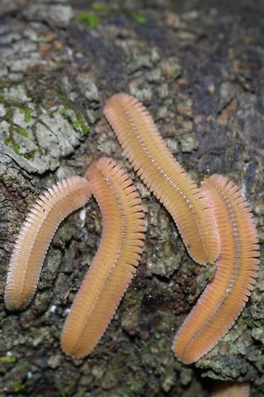
Litóbios
Possuem 15 segmentos com
pernas e antenas curtas;
são pequenos e inofensivos.
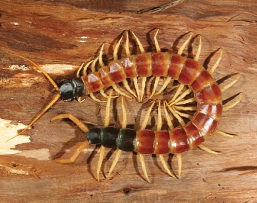
Geófilos
Possuem o corpo bastante
longo e fino, com 27
a quase 200 segmentos;
vivem enterrados em solos
úmidos e também são
inofensivos
Peixes peçonhentos e venenosos
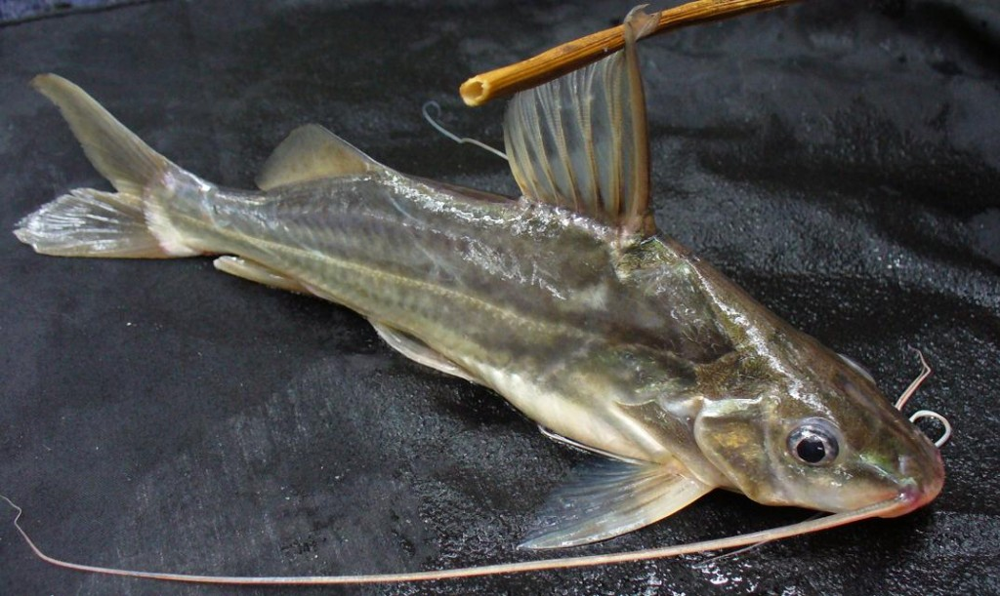
Bagres e Mandis
Possuem ferrões serrilhados
nas nadadeiras peitorais
e dorsal revestidos por tecido
glandular de veneno;
causam dor intensa e
necrose local ao perfurarem
a pele.
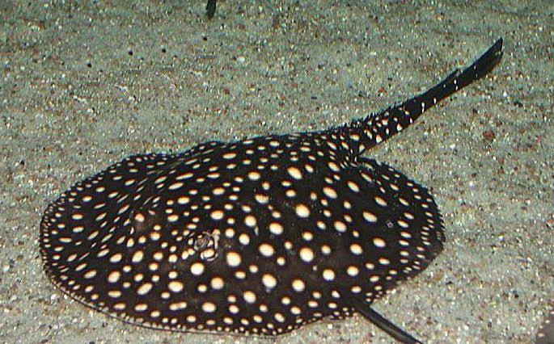
Arraias
Possuem de 1 a 4 ferrões
serrilhados na cauda recobertos
por tecido glandular;
provocam dor extrema, forte
vasoconstrição e necrose no local
da perfuração
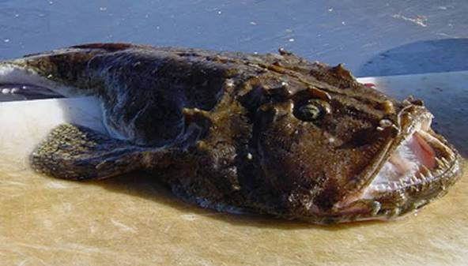
Niquim ou Peixe-sapo
vive semienterrado na areia
e possui 4 espículas ocas
conectadas a glândulas de
veneno (duas dorsais e duas
laterais) que perfuram
profundamente ao ser pisado.
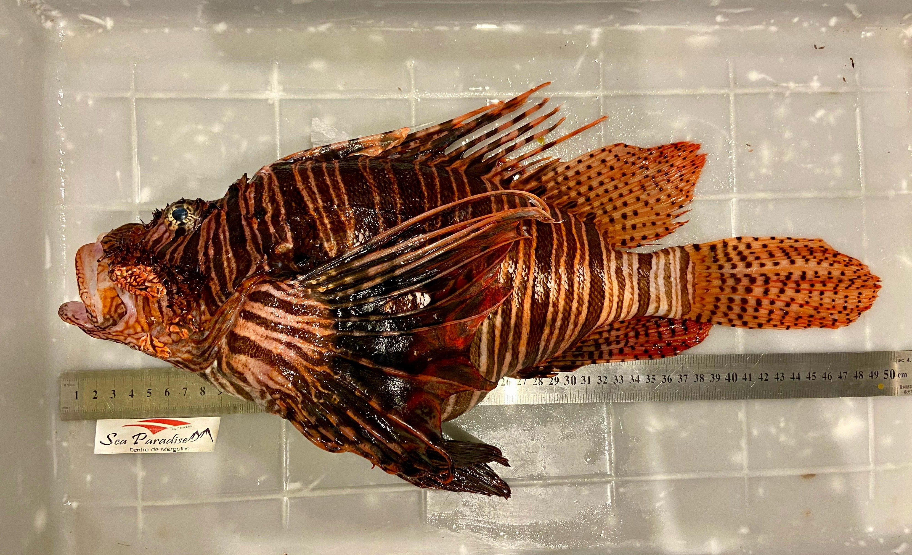
Peixe-escorpião e Peixe-leão
Possuem a peçonha mais
potente entre os peixes
brasileiros, localizada nos
raios das nadadeiras;
o peixe-escorpião
se camufla em rochas
e o peixe-leão é invasor.
Causam dor violenta, necrose
e complicações sistêmicas
musculares e respiratórias
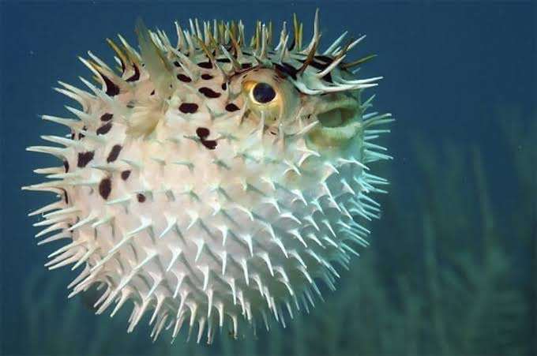
Baiacus
Venenosos por ingestão
(não possuem ferrão);
acumulam tetrodotoxina (potente
neurotoxina que bloqueia
a ação muscular) na pele e
vísceras, podendo levar a
envenenamentos graves e fatais.
PREVENÇÃO
Saiba como evitar acidentes com animais peçonhentos.
Cuidado com calçados
Verifique calçados, roupas e objetos antes de utilizá-los.
Evite locais de risco
Tenha cuidado ao mexer em entulhos, folhas, pedras e locais escuros.
Use proteção
Utilize luvas e calçados adequados ao realizar atividades em jardins ou áreas externas.
Mantenha o ambiente limpo
Evite acúmulo de lixo, madeira, entulho e materiais que possam servir de abrigo.
MITOS E VERDADES
Descubra o que é verdade e o que é mito sobre os animais peçonhentos.
Todo animal peçonhento é perigoso para humanos.
Nem todo animal peçonhento representa o mesmo risco. A gravidade depende da espécie e de outros fatores.
É importante evitar manipular o animal.
Tentar capturar ou tocar no animal pode aumentar o risco de acidentes.
Todo animal peçonhento precisa ser morto.
Não. O ideal é manter distância e procurar ajuda especializada para realizar a remoção com segurança.
Calçados devem ser verificados antes de usar.
Animais peçonhentos podem se esconder em locais escuros e objetos que ficam sem uso por algum tempo.